In Module 2.1, we established something remarkable: two physical switch configurations do Boolean algebra in hardware. Switches wired in series perform AND; switches wired in parallel perform OR. A Boolean expression is both a mathematical test and a wiring diagram — they are the same thing in two different languages.
But that conclusion came with an important limitation. The switches in our circuits were operated by hand — a person physically closed each one. That is fine for demonstrating the idea, but it is not how a computer works. A computer must be able to make decisions at millions of operations per second, faster than any human finger could possibly move.
This module traces the path from that question to its answer. We will understand how the relay works, see how relays wired together become logic gates — the fundamental building blocks of every digital computer — and meet all six standard gates used in real circuits. We close with De Morgan's laws: an algebraic insight that turns out to have profound consequences for how circuits can be simplified.
A relay is a device with a straightforward job: it uses a small electrical current in one circuit to open or close a switch in a completely separate circuit. Understanding how it does this physically is essential before we can understand why it matters for logic.
Inside a relay is an iron bar wrapped in many coils of wire — an electromagnet. When an electrical current flows through the coil, the iron bar becomes temporarily magnetic. That magnetic force pulls down a flexible metal contact arm that is normally held away from a conducting point. When the arm is pulled down, it touches the contact and completes a second, entirely separate circuit — lighting a bulb, driving a motor, or (crucially for us) triggering another relay.
When the current through the coil stops, the iron bar loses its magnetism, the spring-loaded arm returns to its resting position, and the second circuit breaks. The relay is said to be triggered when the electromagnet pulls the contact arm down.
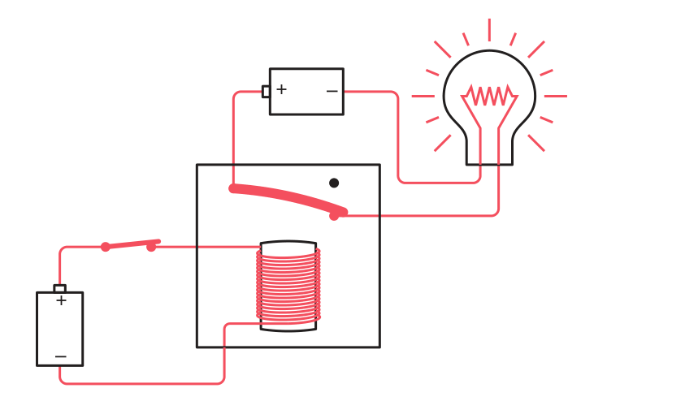
Drawing a complete relay circuit with every wire and two separate batteries quickly becomes cluttered. Engineers simplify this by using the symbol V (for voltage) to represent any connection to the positive terminal of the power supply, and a ground symbol (⏚) to represent the negative terminal. All points labelled V can be considered connected to one another, and all ground symbols likewise. The relay diagram then becomes much cleaner to read.
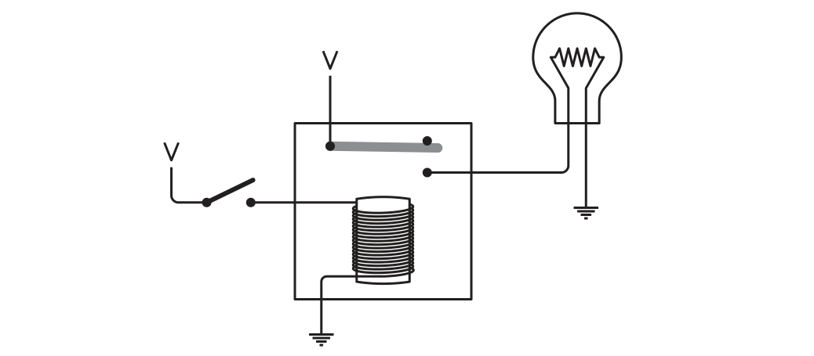
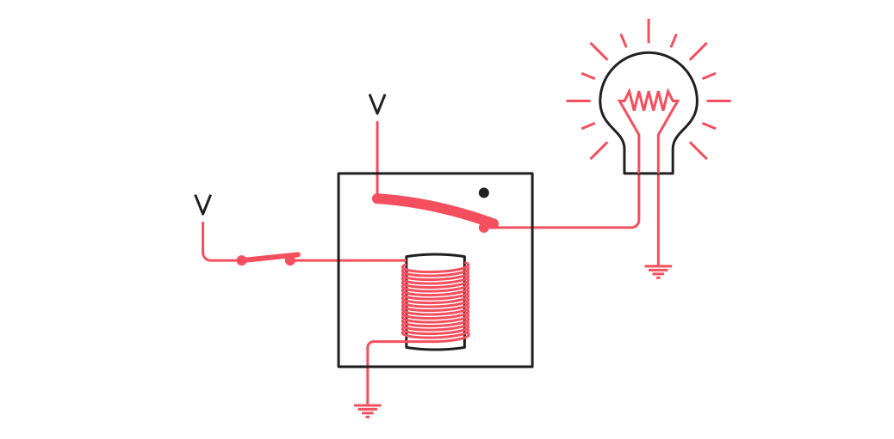
We can step back even further and think about a relay in purely abstract terms: it has an input and an output. When the input has a voltage (current is flowing), the electromagnet is triggered and the output also has a voltage. When the input has no voltage, the output has no voltage. We can draw this without any switches or lightbulbs at all:
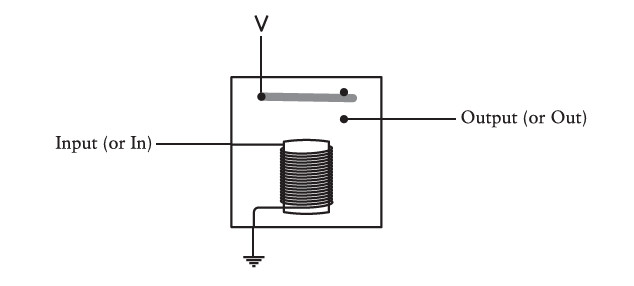
When the output of the first relay is connected to the input of a second relay, we have a cascade: closing one switch at the far left causes the first relay to trigger, which provides voltage to the second relay's control circuit, which then triggers the second relay, which completes the output circuit and lights the bulb.
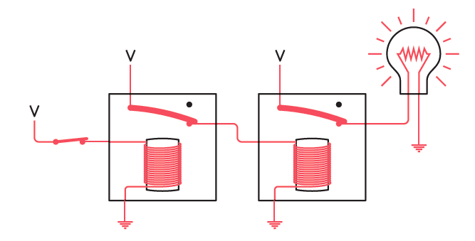
With relays able to cascade, we can now reproduce — in relay hardware — the same AND and OR behaviour we saw with manual switches. The wiring configuration determines which Boolean operation is performed.
Wire two relays so that the output of the first relay provides the power supply for the second relay's output circuit. Now both must be triggered for current to reach the bulb:
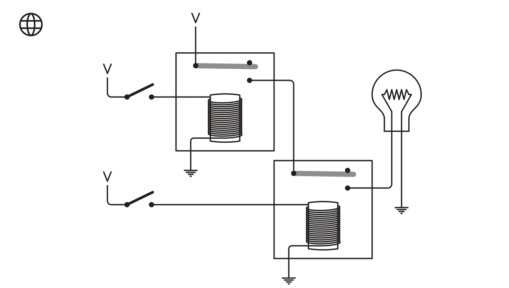
Walk through the four combinations mentally: if only the top switch is closed, the first relay triggers but the second does not receive power and stays open. If only the bottom switch is closed, the second relay's output path has no power regardless. Only when both switches are closed does current flow all the way through to the bulb. This is the AND operation — and these two relays wired in series are called an AND gate.
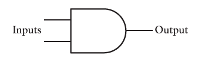
AND Gate Truth Table
| Input A | Input B | Output |
|---|---|---|
| 0 | 0 | 0 |
| 0 | 1 | 0 |
| 1 | 0 | 0 |
| 1 | 1 | 1 |
AND gates are not limited to two inputs. Chaining the output of one AND gate into the input of another creates a 3-input AND gate: all three inputs must be 1 for the output to be 1. The same principle scales to as many inputs as needed.
Now wire two relays so that their output contacts are connected to each other, both feeding the same bulb. Either relay being triggered is enough to light it:
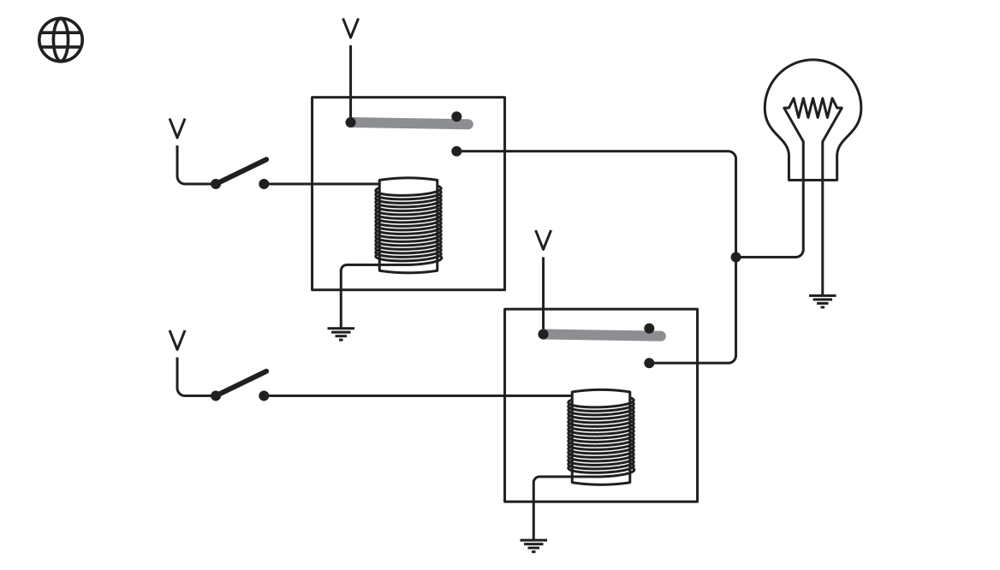
If the top relay triggers, the bulb lights. If the bottom relay triggers, the bulb lights. If both trigger simultaneously, the bulb lights. The only case where the bulb stays off is when neither relay is triggered. This is the OR operation — these two relays in parallel form an OR gate.
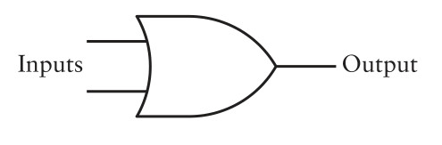
OR Gate Truth Table
| Input A | Input B | Output |
|---|---|---|
| 0 | 0 | 0 |
| 0 | 1 | 1 |
| 1 | 0 | 1 |
| 1 | 1 | 1 |
AND and OR cover two of Boolean algebra's three operators. The third is NOT — the complement, the negation. To realise NOT in hardware, we exploit a feature of the relay we have not yet used: the normally-closed contact.
The relays described so far have a contact arm that rests in an open position and is pulled down to close when the electromagnet fires. This is the normally open output — open by default, closed when triggered. But a double-throw relay also has an upper contact: the arm rests against this upper contact when untriggered, and lifts away from it when triggered. This upper contact is called the normally closed output.
The result is inverted behaviour: when the input switch is open (no current), the bulb is on. When the input switch is closed (current flows), the bulb goes off. This is a realization of the Boolean NOT operator, and a single relay wired this way is called an inverter.
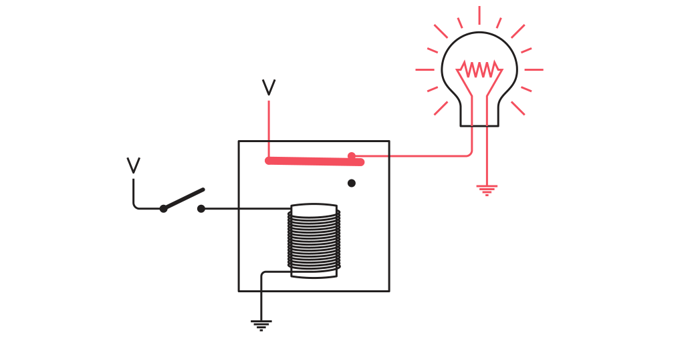
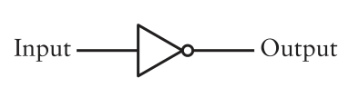
There are six standard logic gates in total. AND, OR, and NOT account for three. The remaining three are built by combining the series/parallel configurations with the normally-closed contact — producing inverted versions of AND and OR, plus one that passes its input unchanged.
Wire two relays in series using their normally-closed outputs. When both inputs are 0 (neither relay triggered), current flows through both normally-closed contacts and the bulb is on. The moment either input goes to 1 (that relay fires, breaking its normally-closed path), the bulb goes off. The bulb is only on when neither input is 1 — the precise opposite of OR.
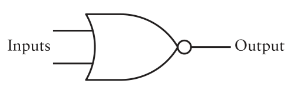
NOR Gate Truth Table
| Input A | Input B | Output |
|---|---|---|
| 0 | 0 | 1 |
| 0 | 1 | 0 |
| 1 | 0 | 0 |
| 1 | 1 | 0 |
Wire two relays in parallel (like OR) but using normally-closed outputs. When both inputs are 0, both normally-closed contacts are intact and the bulb is on. When only one input is 1, the other relay's normally-closed contact still provides a path and the bulb stays on. Only when both inputs are 1 do both normally-closed contacts break simultaneously — and the bulb goes off. Again, this is the exact opposite of AND.
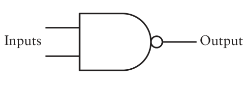
NAND Gate Truth Table
| Input A | Input B | Output |
|---|---|---|
| 0 | 0 | 1 |
| 0 | 1 | 1 |
| 1 | 0 | 1 |
| 1 | 1 | 0 |
The sixth and final member of the standard gate family is the buffer. A buffer is simply a single relay wired in the normal (normally-open) configuration: when the input is 1, the output is 1; when the input is 0, the output is 0. It copies its input to its output unchanged.
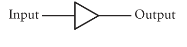
A buffer that merely copies its input sounds pointless — and for logic, it largely is. Its value is electrical, not logical. In a large circuit, one gate's output may need to drive many other gate inputs simultaneously. This is called fan-out, and it gradually weakens the signal — each additional connection draws a little current. A buffer acts like an amplifier: it takes the weak signal and reproduces it at full strength, allowing one output to reliably drive many inputs without degradation. Buffers also introduce a tiny time delay, which can be useful for synchronising signals in complex circuits.
We now have all six standard logic gates. Each was built from relays; each has a standard schematic symbol agreed upon by engineers worldwide; and each has a truth table that completely defines its behaviour. The summary below brings them all together.
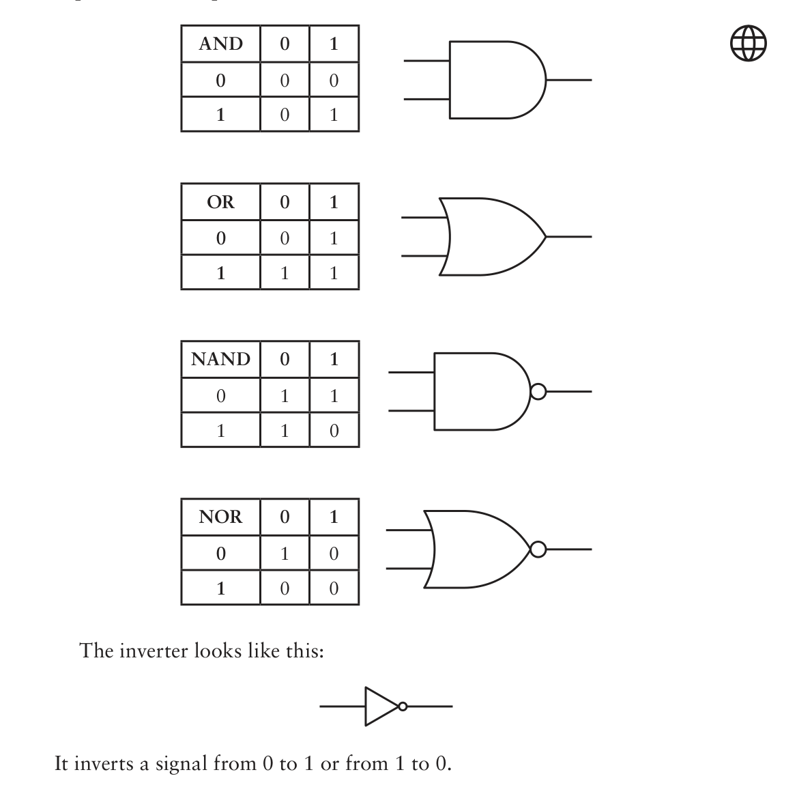
With six gates in hand, we are now in a position to appreciate one of the most elegant results in Boolean algebra: De Morgan's laws. These laws describe a hidden symmetry between AND and OR — a symmetry that has direct, practical consequences for circuit design.
Augustus De Morgan (1806–1871) was a Victorian mathematician nine years older than George Boole. His book Formal Logic was published in 1847 — the same year, the story goes, as Boole's The Mathematical Analysis of Logic. The two men were intellectual allies: De Morgan recognised the importance of Boole's work very early, encouraged him throughout his career, and helped him develop his ideas. Today De Morgan is remembered mainly for his laws — while the system bears Boole's name, the laws that govern its algebra bear De Morgan's.
De Morgan's laws say that AND and OR are interchangeable — as long as you invert everything in the right places. There are two laws, one for each direction of exchange:
The bar over a letter (or group of letters) means NOT — that signal is inverted. The laws can be read as:
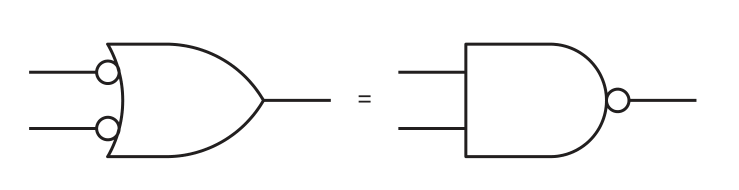
| Gate | Symbol Feature | Boolean Operation | Relay Configuration | Output = 1 When… |
|---|---|---|---|---|
| AND | Flat back, curved front | A × B |
Two relays in series | Both inputs are 1 |
| OR | Curved back and front (bow-shaped) | A + B |
Two relays in parallel | At least one input is 1 |
| NOT | Triangle + circle at output | 1 − A or Ā |
One relay, normally-closed contact | Input is 0 |
| NAND | AND shape + circle at output | NOT (A × B) |
Two relays in parallel, normally-closed | At least one input is 0 |
| NOR | OR shape + circle at output | NOT (A + B) |
Two relays in series, normally-closed | Both inputs are 0 |
| Buffer | Triangle, no circle | A (unchanged) |
One relay, normally-open contact | Input is 1 (copies input) |
| Concept | Meaning |
|---|---|
| Relay | A switch controlled by electricity (via an electromagnet), not by a finger. The foundation of all logic gates. |
| Normally open | Contact is open by default; closes when the relay is triggered. Used for AND, OR, buffer. |
| Normally closed | Contact is closed by default; opens when the relay is triggered. Used for NOT, NAND, NOR. |
| Cascading | Connecting the output of one relay/gate to the input of another, allowing decisions to propagate automatically. |
| Fan-out | One output driving multiple inputs simultaneously. Weakens signal; buffers restore it. |
| De Morgan's Law 1 | A × B = A + B — AND with inverted inputs = NOR |
| De Morgan's Law 2 | A + B = A × B — OR with inverted inputs = NAND |
| Universal gate | NAND or NOR alone can build any other gate — making them the most versatile single building blocks for digital circuits. |